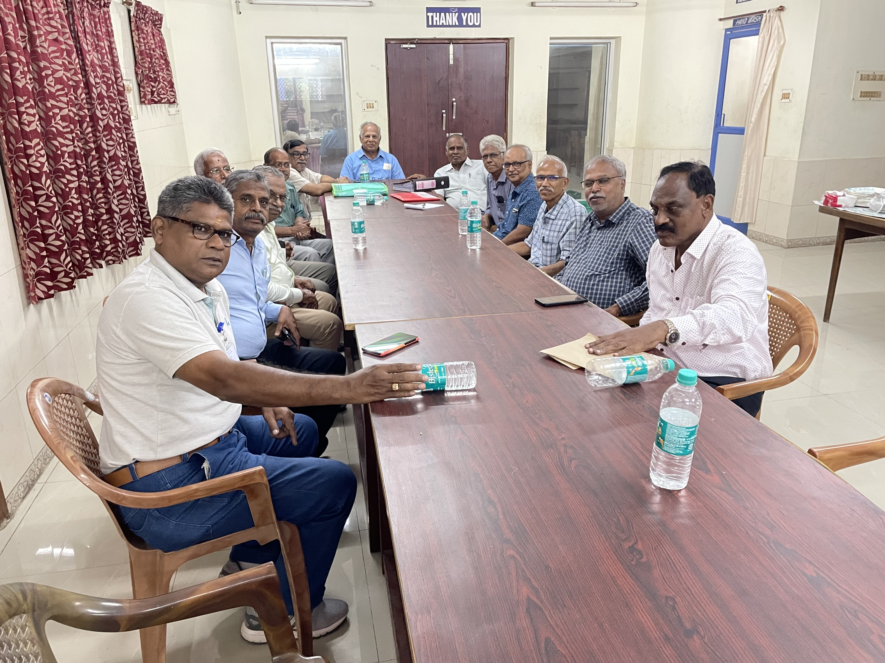

2 October 2023
TTPA Executive Committee Meets at Tiruchirappalli
Executive Committee Meeting • Tiruchirappalli
The TTPA Executive Committee met at Tiruchirappalli under the chairmanship of President Dr. N. Natarajan. Dr. M. Babu welcomed the members, and General Secretary Dr. K. S. Palaniswami presented the agenda and the minutes of the previous meeting for confirmation.
Members Present
- Dr. N. Natarajan
- Dr. M. Babu
- Dr. K. S. Palaniswami
- Dr. S. A. Asokan
- Dr. M. Sekar
- Dr. L. Gunaseelan
- Dr. D. Sundararaj
- Dr. V. Balakrishnan
- Dr. S. Sivaselvam
- Dr. N. Punniamurthy
Important Proceedings
- Guidelines were approved for voluntary donations and the establishment and administration of endowments.
- The TTPA Excellence Award was proposed to recognise deserving TANUVAS students in academics, sports, games and other talents.
- The objectives and format of the first quarterly TTPA Newsletter were presented by Editor Dr. V. Balakrishnan. The draft issue was released by the President and received by the Editor.
- The handbook Veterinary Herbal Medicine, authored and compiled by Rtn. Prof. N. Punniamurthy, was put into circulation.
- Financial accounts, investment arrangements, voluntary annual contributions and the proposed TTPA Directory 2023 were discussed.
- Members discussed furnishing the TTPA office, NHIS and Life Certificate matters, and conducting alternate Executive Committee meetings outside Chennai.
The meeting concluded with obituary references, two minutes of silence in remembrance of departed pensioners, and a vote of thanks to the organisers.